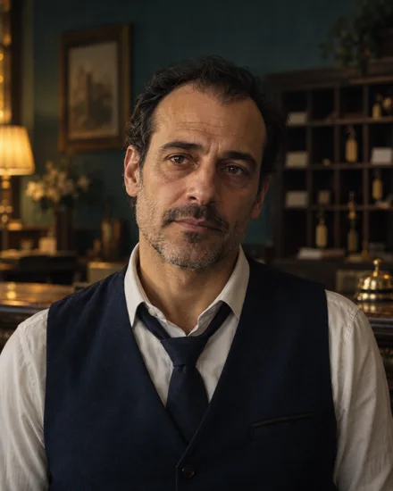
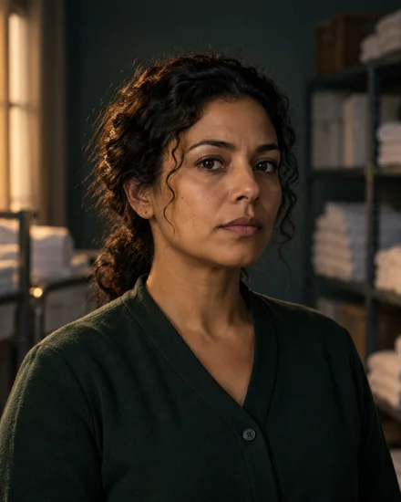
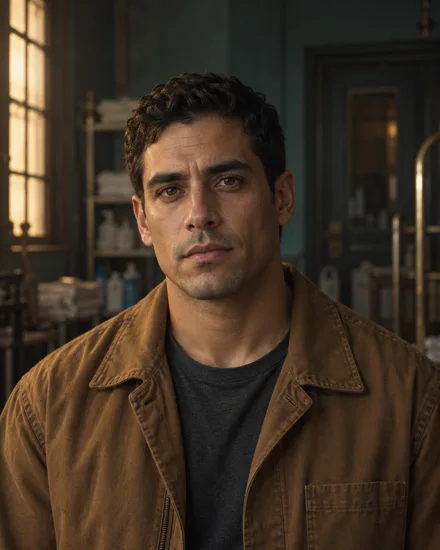
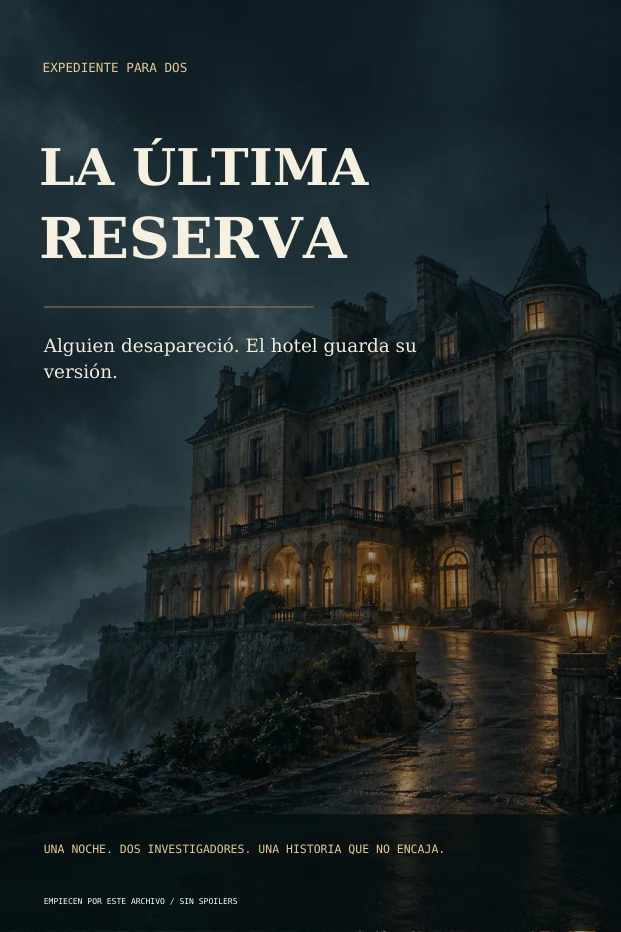

ARCHIVO A / REGISTRO DE ACCESO
Una puerta se abrió.
RELOJ DE CÁMARA20:16
Una persona entra al pasillo. Esa es la hora que aparece en pantalla.
¿Pueden confiar en esa hora?
Una noche distinta. Una investigación para dos.
LA ÚLTIMA RESERVA
Una mujer desapareció del Hotel Bruma. Ustedes reciben dos archivos distintos. Solo al cruzar las pruebas podrán descubrir qué ocurrió.
Queremos resolver el casoUS$12,90 · Pago único · Juego digital en español
Prueben cómo se investiga ↓22:06 / La última noche del hotel
Elena Varela llegó para hablar antes de que se firmara la venta del hotel. Ahora su habitación está vacía y el documento que vino a buscar ha desaparecido.
«Estoy en la azotea».
Ese fue el mensaje. Pero el acceso estaba precintado.
¿Dónde está Elena? ¿Quién quiere que miren hacia otro lado?
Antes de entrar, una pequeña prueba
Cada documento cuenta una parte. Júntenlas y aparece algo que ninguno podía demostrar por separado.
ARCHIVO A / REGISTRO DE ACCESO
Una persona entra al pasillo. Esa es la hora que aparece en pantalla.
ARCHIVO B / INFORME TÉCNICO
ARCHIVO B / INFORME TÉCNICO
Ambos registros corresponden al mismo instante. La cámara conserva ese desfase.
Entonces, ¿a qué hora real se abrió la puerta?
Abran la prueba B y crucen los dos documentos.
Ejemplo introductorio creado para esta página. No pertenece al caso y no revela sus soluciones.
En el Hotel Bruma, conectarán horarios, declaraciones, objetos y documentos hasta sostener una explicación juntos.
Ver lo que recibimos ↓No basta con señalar a un sospechoso
Comparen registros y distingan lo que una prueba muestra de lo que ustedes están suponiendo.
Pongan declaraciones frente a documentos. Una sospecha necesita una cadena de evidencias.
Acuerden una respuesta, compruébenla y dejen que el siguiente control continúe la historia.
Todos estuvieron en el hotel
Conocerán sus vínculos y contrastarán sus declaraciones con las pruebas. Ningún retrato les dirá en quién confiar.
El hotel está a punto de cambiar de manos. Su pasado aún tiene páginas pendientes.

Por el mostrador pasan mensajes, movimientos y versiones de la última noche.

Su recorrido por el hotel deja detalles que deberán ubicar en la secuencia.

Los accesos y los registros técnicos forman parte de lo que tendrán que revisar.
Recibió el mensaje de Elena. Lo que ese mensaje demuestra sigue por resolver.
Esto es lo que abren después de comprar
Dos archivos de investigación, una mesa de equipo y una historia que avanza cuando conectan las pruebas.

Páginas reales del producto. Se muestran pruebas iniciales, sin controles ni resolución.
21 documentos de evidencia repartidos entre A y B. Cada persona tiene información que debe aportar.
Una mesa de equipo indica qué revisar, qué responder y cuándo comprobar el resultado.
Si se atascan, elijan cuánto apoyo necesitan. Pueden avanzar sin buscar soluciones en internet.
Comprueben cada etapa y, al terminar, revisen la explicación completa de la investigación.
Lean en pantalla o preparen una mesa con papeles. Imprimir es opcional.
La próxima noche juntos
No necesitan actuar personajes ni que uno conozca la solución. Los dos descubren la historia mientras investigan.
Después de aprobarse el pago, encontrarán los archivos en Hotmart.
Recomendamos dos pantallas, o imprimir y separar los archivos. Papel y lápiz o notas del teléfono son suficientes.
Los controles guían el avance. Pueden pausar y retomar; el modo principal no obliga a jugar contra reloj.
Una compra para una noche de investigación
Elena sigue desaparecida. El mensaje ya llegó. Las pruebas están repartidas.
La siguiente conexión la hacen los dos.
EXPEDIENTE PARA DOS
Juego de investigación digital en español
Pago único por el caso completo.
Una compra para jugar en pareja.
Acceso digital tras aprobarse el pago en Hotmart.
Precio expresado en dólares estadounidenses. El importe final, los impuestos y las formas de pago disponibles se muestran en el checkout según el país.
Antes de abrir la habitación 307
Es una investigación guiada en PDF. Leerán documentos, cruzarán información de dos archivos, responderán ocho desafíos y comprobarán sus conclusiones. La historia avanza mediante los controles.
La guía explica cómo empezar y la mesa de equipo indica qué documentos usar en cada etapa. Hay tres niveles de ayuda por desafío. No necesitan que una tercera persona dirija la partida.
Sí, con un lector de PDF. Recomendamos una pantalla por persona, o imprimir los archivos. En pantallas pequeñas tendrán que ampliar algunos documentos. También pueden usar tableta o computadora.
Imprimir es opcional. Pueden leer en pantalla y escribir sus respuestas en papel o notas del teléfono. El producto incluye una edición para imprimir; papel, tinta y dispositivos no están incluidos.
El caso tiene ocho desafíos. La duración depende de cuánto lean, discutan y utilicen ayudas; no prometemos un tiempo fijo. Pueden detenerse y retomar. El juego principal no tiene un límite obligatorio.
Es un caso con una solución definida. La primera partida ofrece el descubrimiento; después de conocer la resolución, repetirlo ya no será el mismo misterio. No es un catálogo de casos ni una suscripción.
Esta compra incluye el caso principal completo. Duelo de Detectives y Reto Contrarreloj son complementos opcionales que pueden ofrecerse por separado. No necesitan comprarlos para resolver La Última Reserva.
La venta se procesa en Hotmart. El checkout informa si hay medios de pago disponibles para su país y muestra el importe final antes de confirmar. El material está íntegramente en español; no incluye traducciones.
Reciben archivos digitales, no una caja física. El acceso se habilita en Hotmart después de aprobarse el pago. Descarguen el material y empiecen por la guía de inicio.
Revisen las condiciones y el plazo de garantía que se indiquen en el checkout de Hotmart antes de pagar. Las opciones de soporte y solicitud asociadas a la compra estarán disponibles desde su cuenta y comprobante.
Es ficción. La historia incluye desaparición, encierro, extorsión y referencias a un incendio pasado. Está dirigida a una experiencia de investigación para adultos; no es un material infantil.
Hotel Bruma / Habitación 307
Descubran qué pueden resolver cuando investigan juntos.
Queremos abrir el casoUS$12,90 · Juego digital para dos · En español